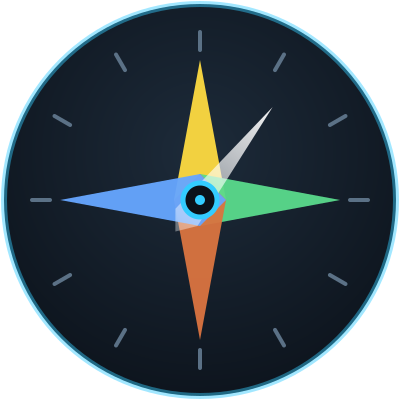

StatCompassWorld-of-Warcraft-Addon · Midnight 12.1.0 World of Warcraft addon · Midnight 12.1.0
Ab einer bestimmten Höhe zählt jeder weitere Punkt eines Sekundärwerts nur noch anteilig. StatCompass zeigt, wo diese Grenzen liegen, wie weit du von der nächsten entfernt bist und was dein nächster Punkt noch wert ist. Past a certain point, every further point of a secondary stat only counts in part. StatCompass shows where those thresholds sit, how far you are from the next one, and what your next point is still worth.
Gestrichelt: ohne Abschwächung. Durchgezogen: was ankommt. Dashed: without diminishing returns. Solid: what arrives.
Eine Zeile je Sekundärwert. Kein Diagramm zum Deuten, keine Punktzahl — die Zahl, die du brauchst, und daneben, was sie bedeutet. One row per secondary stat. No chart to interpret, no score — the number you need, and next to it what it means.
Was auf deiner Ausrüstung steht — und was davon nach der Abschwächung tatsächlich bei dir ankommt. What your gear says — and how much of it actually reaches you after diminishing returns.
Er füllt sich innerhalb der aktuellen Abschwächungsstufe. Auf einen Blick: wie nah die nächste Verschlechterung ist. It fills up inside the current tier. At a glance: how close the next penalty is.
Die Schwellen deiner Spezialisierung, an denen sich wirklich etwas ändert. Mouseover zeigt Erklärung, Ziel-Rating, deinen Wert und die Quelle der Zahl. The thresholds for your specialization where something actually changes. Hover for the explanation, the target rating, your value and where the number came from.
Die meisten Wert-Addons brechen nach einem Patch lautlos: Die Zahlen bleiben,
das Spiel ändert sich. /statcompass test vergleicht die eigene
Rechnung mit dem Spiel und meldet die Abweichung.
Most stat addons break silently after a patch: the numbers stay, the game
changes. /statcompass test compares its own maths against the
game and reports the drift.
Der lange Name steht in der Dokumentation, weil kurze Befehle gern von
anderen Addons belegt sind. /stc und /sk tun dasselbe.
The long name is the documented one, because short commands tend to be
taken by other addons. /stc and /sk do the same.
/statcompass
Fenster anzeigen oder versteckenshow or hide the window/statcompass doctor
vollständige Selbstdiagnose — bei Problemen zuerstfull self-diagnosis — check this first/statcompass test
prüfen, ob die Daten noch zum Patch passencheck whether the data still matches the patch/statcompass update
neue Zahlen als Textpaket einspielen, ohne Addon-Updateload new numbers as a text package, without an addon update/statcompass id
die eigene Spezialisierungs-ID anzeigenshow your specialization ID/statcompass reset
Update-Paket löschen, Fenster zentrierendiscard the update package, recentre the windowDie eigenen Ausrüstungswerte und die Spezialisierung. Kein Kampflog, keine Abklingzeiten, keine Auren, kein Netzverkehr, keine Telemetrie, keine Automatik. Es sagt dir nie, welchen Knopf du drücken sollst. Your own gear ratings and your specialization. No combat log, no cooldowns, no auras, no network traffic, no telemetry, no automation. It never tells you which button to press.
Im Kampf wird bewusst gar nicht erst aktualisiert — Ausrüstungswerte ändern sich dort ohnehin praktisch nicht. It deliberately does not even recalculate while you are in combat — gear ratings hardly change there anyway.
Das Archiv herunterladen und entpacken. Download the archive and unpack it.
Den Ordner StatCompass nach
World of Warcraft\_retail_\Interface\AddOns\ legen.
Put the StatCompass folder into
World of Warcraft\_retail_\Interface\AddOns\.
Im Spiel /statcompass tippen. Wenn etwas nicht stimmt,
sagt /statcompass doctor, was.
Type /statcompass in game. If something is off,
/statcompass doctor says what.